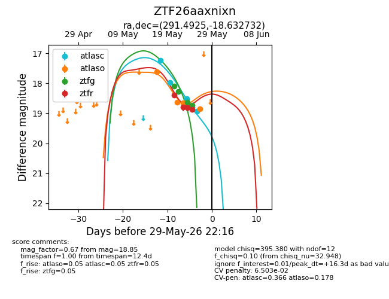
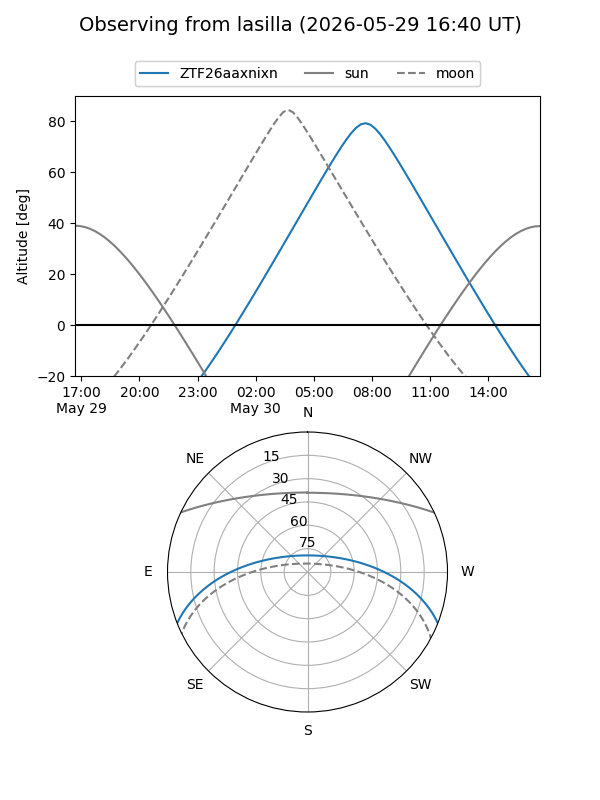
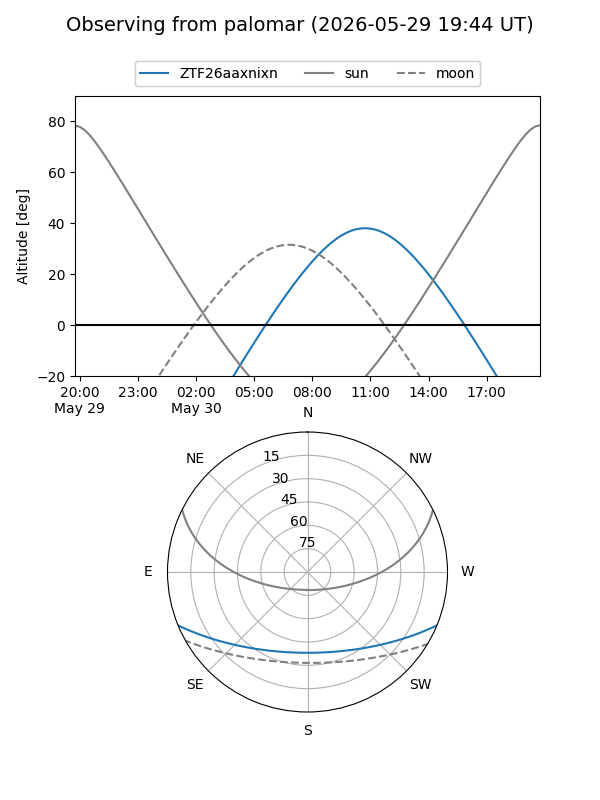
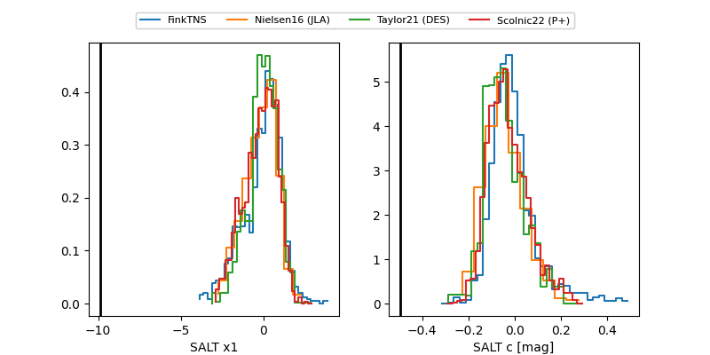

ZTF26aaxnixn
Target ZTF26aaxnixn at 2026-05-29 22:17
Aliases and brokers:
lsst-FINK: link
lsst-Lasair: link
lsst-ALeRCE: link
ztf-FINK: link
ztf-Lasair: link
ztf-ALeRCE: link
alt names
ZTF26aaxnixn (ztf,fink_ztf)
Coordinates:
equatorial (ra, dec) = 291.4925,-18.63273
equatorial (HMS+DMS) = 19:25:58.21,-18:37:57.84
galactic (l, b) = (19.7460,-15.79982)
Flags:
likely cv: !
Photometry:
last atlasc=18.92, atlaso=18.85, ztfg=18.73, ztfr=18.88
5 atlasc, 4 atlaso, 4 ztfg, 4 ztfr detections
Lightcurve

Visibility


Additional plots
